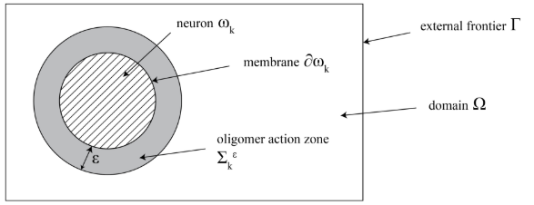

Afin de modéliser la dispersion des protéines dans le cerveau, nous avions besoin de données biologiques et d’un modèle mathématique de diffusion. Pour cela, nous nous sommes basés sur le travail de Martin Andrade-Restrepo, Paul Lemarre, Laurent Pujo-Menjouet, Leon Matar Tine et Sorin Ionel Ciuperca, consigné dans un article publié dans la revue ESAIM: Proceedings and Surveys en 2019. Cet article, intitulé Modeling the spatial propagation of Aβ oligomers in Alzheimer’s disease, nous a apporté des informations tant sur la biologie d’Alzheimer que sur les mathématiques qui régissent le comportement de la maladie. Nous allons ici en faire une brève vulgarisation, afin d’expliquer comment nous avions planifié notre modèle.
Le modèle proposé dans cet article s’intéresse uniquement aux oligomères d’A\(\beta\) et à leur propagation spatiale. Il est concentré sur les stades précoces de la maladie, c’est-à-dire qu’on n’observe pas encore de plaque de fibrilles. Enfin, vu la complexité du modèle, il est restreint à quelques neurones seulement. Cependant, cela est cohérent avec la réalité biologique d’un stade précoce de la maladie.
Considérons d’abord la logique du modèle. On commence par définir le processus chimique étudié :

On détermine un domaine \(\Omega \) avec une limite \( \Gamma \), dans lequel on représente \(N \in {\displaystyle \mathbb{N} } \) neurones \( \omega _1\),\(\omega _2\),...,\(\omega _N\) (représentés par des disques, voir schéma). Ces neurones produisent des monomères A\(\beta\) à un taux \(\lambda\), au niveau de leur membrane notée \(\delta \omega _k\), \(k = 1,2,...,{\displaystyle \mathbb {N} }\). Le taux de production des monomères est constant le long d’une membrane, mais varie selon son activité : ce taux est uniforme pour un même neurone mais varie dans le temps. Les monomères présents dans le domaine \(\Omega\) sont dégradés ou évacués par le fluide cérébro-spinal à un taux \(\delta\).
Biologiquement, les monomères s’assemblent d’abord en proto-oligomères, puis en oligomères. Les proto-oligomères sont de petits polymères instables qui grossissent par polymérisation à un taux \(r_i\) (à taille \(i\)) et qui perdent des monomères à un taux \(b\). Les proto-oligomères peuvent également se fragmenter: on considère en fait que toutes les liaisons à l’intérieur d’un proto-oligomère ont la même probabilité de se briser; la dépolymérisation peut donc conduire à l’obtention d’un polymère et d’un monomère ou de deux polymères.
On obtient que le taux de fragmentation augmente avec la taille \(i\) du polymère : \(\beta \times (i−1)\) ; et que la probabilité d’obtenir n’importe quel polymère de taille inférieure à \(i\) lors d’une fragmentation est uniforme (par exemple, pour un oligomère de taille 8, on a autant de chance d’obtenir un polymère de taille 5 et un de taille 3, qu’un de taille 6 et un de taille 2, etc.).
Cela s’écrit \(K(i,j)=\frac{1}{j-1}\mathbb{1}_{[1\leq i\leq j-1]}\).
Ce noyau de fragmentation vérifie les propriétés de symétrie, de conservation de la masse et de probabilité du noyau. On utilise les propriétés de ce noyau parce que cela simplifie l’équation de la fragmentation. La vitesse de fragmentation de la taille j à la taille {i} (donc \(j>i\)) s’exprime par \(2\beta (j)K(i,j) = 2 \beta\) pour \(1 \leq i \leq j-i\). L’équation obtenue est une équation de polymérisation-fragmentation.
Enfin, une fois que les proto-oligomères ont atteint une taille critique \(i_0\), ils deviennent des oligomères : ils sont alors très stables et n’échangent plus de monomères avec le système. Ce sont ces oligomères qui détruisent les neurones.
On s’intéresse ensuite au processus qui se déroule à l’échelle des polymères.
Chaque polymère se déplace à une vitesse différente selon sa taille, notée \(D_1\) pour un monomère (donc un polymère constitué d’un seul élément), puis \(D_2\), \(D_3\)...jusqu’à \(D_{i_0}\) pour les oligomères. Plus un polymère est petit, plus il se déplace rapidement.
Les oligomères sont toxiques pour un neurone lorsqu’ils en sont assez proches. On définit donc un périmètre de rayon \(\epsilon\) autour de la membrane de chaque neurone. Les monomères sont produits par les neurones, mais cette production ralentit lorsque les neurones meurent. On fixe un taux de production maximum \(\lambda_0\), et un taux de production minimum nul pour les neurones morts. Ce taux décroît, selon le modèle suivant:
\(\frac{d\lambda_k}{dt} = - \tau \lambda \int_{\sum_{k}^{\epsilon}}\mu(x,t)dx \), où \(\tau\) représente la toxicité de l’oligomère pour le neurone.
On considère que les neurones peuvent uniquement dégénérer et ne peuvent pas se régénérer: dans cette simulation, il y a toujours moins de neurones vivants en fin de simulation que dans la situation initiale.
Le modèle suit la condition aux limites de Neumann. On considère que les limites de l'ensemble \(\Omega\) portent une condition d’absorbtion, c’est-à-dire que les oligomères disparaissent aux limites.
Selon les variables définies précédemment, on définit différents systèmes qui permettent la définition du système final. Sans détailler les étapes préliminaires, nous allons présenter ci-après le système final, écrit sous la forme d’une équation de réaction-diffusion. Ce système est issu de la combinaison de plusieurs systèmes d’équations différentielles partielles, qui ont ensuite été adaptés aux simulations numériques : ils ont été simplifiés afin de pouvoir travailler avec des éléments finis.
Nous obtenons donc le système de réaction-diffusion suivant:
$$
\left \{
\begin{array}{l r c l}
\forall i \in {1, …, i_0}, & \frac{\delta \mu_i}{\delta t} & = & D_i\Delta\mu_i + F_i( \mu_1,...,\mu_{i_0} ), \\
\forall i \in {1, …, i_0}, & D_i \nabla \mu_i \cdot \vec{n}|_{\Gamma} & = & - \gamma \mu_i, \\
\forall i \in {2, …, i_0}, & D_i \nabla \mu_i \cdot \vec{n}|_{\delta\omega_k}=0 & \text{and} & D_1\nabla\mu_1\cdot\vec{n}|_{\delta\omega_k}=\lambda_k(t).
\end{array}
\right.
$$
Les facteurs \(F_i\) sont définis tels que:
\(F_1(\mu_1, \ldots,\mu_{i_0}) = -\, \delta \mu_1 \,+\,b \sum_{j=3}^{i_0-1} \mu_j \, + \, 2\beta \sum_{j=2}^{i_0-1} \mu_j \, - \, \sum_{j=2}^{i_0-1} r_j\mu_j\mu_1\),
\(F_2(\mu_1, \ldots,\mu_{i_0}) = b\mu_3 - r_2\mu_2\mu_1 - \beta\mu_2 + \,2\beta \sum_{j=3}^{i_0-1} \mu_j \),
\(F_i(\mu_1, \ldots,\mu_{i_0}) = b\mu_{i+1}-b\mu_i+r_{i-1}\mu_{i-1}\mu_1 - r_i\mu_i\mu_1 - \beta(i-1)\mu_i+2\beta\sum_{j=i+1}^{i_0-1}\mu_j\)
\(F_{i_0 -1}(\mu_1, \ldots,\mu_{i_0}) = -\,b\mu_{i_0-1} \,+ r_{i_0-2}\,\mu_{i_0-2}\,\mu_1\,-\, r_{i_0-1}\,\mu_{i_0-1}\,\mu_1 - \beta(i_0-2)\mu_{i_0-1}\),
\(F_{i_0}(\mu_1, \ldots,\mu_{i_0}) = r_{i_0-1} \,\mu_{i_0-1}\,\mu_1\).
Ces systèmes d’équations sont assez impressionnants, et nous avons donc pris le temps de nous arrêter dessus pour comprendre leur fonctionnement, et pouvoir ainsi les adapter aux modélisations.
Le premier système se résume à trois équations, qui correspondent respectivement à la variation de densité du polymère considéré, et aux conditions aux limites \(\Gamma\) et \( \delta\omega_k\).
Nous allons donc détailler la première équation, \( \forall i \in\) {1, …, \( i_0\)}, \( \frac{\delta \mu_i}{\delta t} = D_i\Delta\mu_i + F_i( \mu_1,...,\mu_{i_0} )\), et les variations induites par le facteur \(F_i\).
Les différentes variations pour les valeurs de \(i\) possibles suivent toutes le même modèle: elles traduisent la polymérisation, la dépolymérisation et la fragmentation des polymères qui produisent ou détruisent des polymères de taille \(i\). Nous allons nous pencher ici sur l’exemple de \(F_1\) pour mieux visualiser cette notion.
Nous posons \(\; F_1(\mu_1, \ldots,\mu_{i_0}) = -\, \delta \mu_1 \,+\,b \sum_{j=3}^{i_0-1} \mu_j \, + \, 2\beta \sum_{j=2}^{i_0-1} \mu_j \, - \, \sum_{j=2}^{i_0-1} r_j\mu_j\mu_1\)
Dans le cas de la formation et de la disparition de monomères, nous considèrons les points suivants:
Les fonctions de \(F\) suivent toutes la même logique. Pour tout \(i \geq 2\), nous considérons positivement la dépolymérisation et la fragmentation des polymères de tailles supérieures \( j \geq i\), et négativement la polymérisation et la fragmentation des polymères de taille \(i\). Pour \(i=i_0-1\), les seuls polymères de taille supérieure sont les oligomères, ce sont donc les seuls considérés dans les pertes liées à la polymérisation.
Enfin, pour les oligomères, à \(F_{i_0}\), seule la polymérisation depuis les polymères de taille \(i_0-1\) est considérée. En effet, nous avons vu que les oligomères sont stables, et que par conséquent il n’y a plus de dépolymérisation ou de fragmentation possible. Le nombre d’oligomères est donc nécessairement croissant.
Finalement, cet article nous a permis de définir et d’étudier un modèle mathématique, sur lequel nous voulions nous baser pour améliorer nos modélisations.
L’intégralité de l’article et l’étude des premiers résultats théoriques sont disponibles ici.